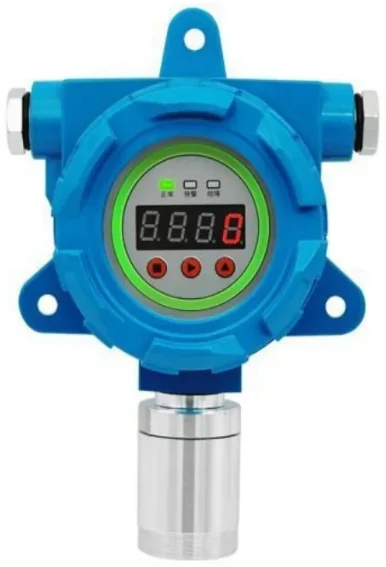
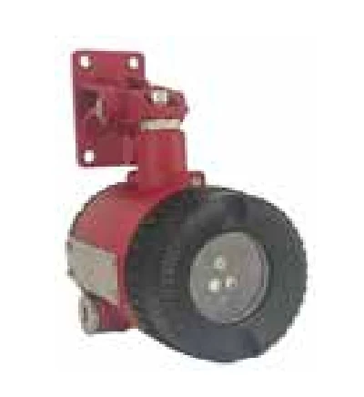
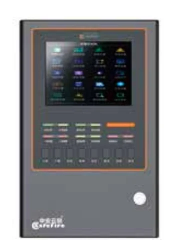
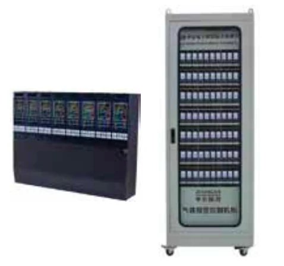
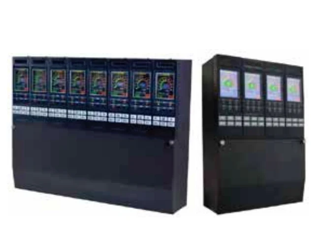
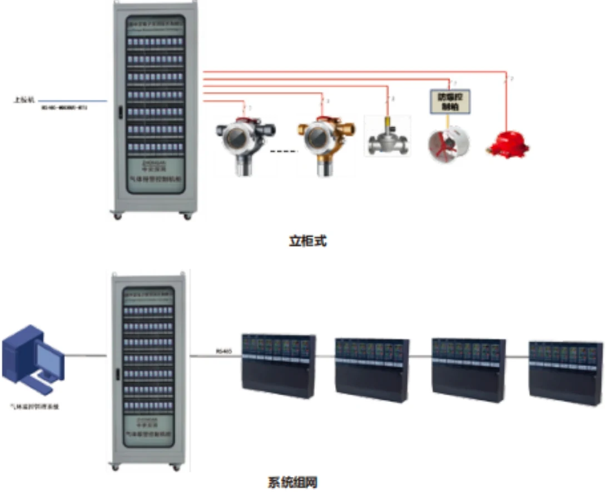

首页 / 产品中心
气体探测器 · 火焰探测器 · 便携式检测仪 · GDS 系统 · 智能监护，五大分类全线产品完整技术参数。参数引自《硕秒科技产品样本 2026》及原厂选型手册，如有更新以最新资料为准。

| 检测原理 | 电化学 | 采样方式 | 扩散型 |
|---|---|---|---|
| 准确度 | ±2% F.S. | 重复性 | ±2% F.S. |
| 显示方式 | 数字式 LED 显示和指示 | 输入电源 | 24V DC（16~30V DC） |
| 功耗 | <2.4W（24V DC） | 输出信号 | 4~20mA（三线制） |
| 触点容量 | 30V DC/10A（可选配） | 传输电缆 | ≤1000m，3×1.5mm² |
| 报警方式 | LED 光报警，可选配防爆声光报警 | 防爆等级 | Ex db ib IIC T6 Gb / Ex ib tb IIIC T85℃ Db |
| 防护等级 | IP66 | 接口 | 2~3/4″ NPT F |
| 环境温度 | -40℃~+50℃ | 环境湿度 | 10~95%RH（非冷凝） |
| 外形尺寸 | 128×254×129mm（W×H×D） | 壳体/重量 | 铝合金 / 3kg |
| 气体 | 检测范围 | 分辨率 | 响应时间 |
|---|---|---|---|
| H₂S 硫化氢 | 0~20ppm | 0.1ppm | T₉₀<30s |
| CO 一氧化碳 | 0~100ppm | 1ppm | T₉₀<30s |
| HCN 氰化氢 | 0~50ppm | 0.1ppm | T₉₀<90s |
| O₂ 氧气 | 0~25%Vol | 0.1%Vol | T₉₀<30s |
| NH₃ 氨气 | 0~100ppm | 1ppm | T₉₀<60s |
| Cl₂ 氯气 | 0~10ppm | 0.1ppm | T₉₀<60s |
| O₃ 臭氧 | 0~1ppm | 0.01ppm | T₉₀<30s |
| ETO 环氧乙烷 | 0~100ppm | 1ppm | T₉₀<90s |

| 检测原理 | 催化燃烧 | 采样方式 | 扩散型 |
|---|---|---|---|
| 准确度 | ±2% F.S. | 重复性 | ±2% F.S. |
| 显示方式 | 数字式 LED 显示和指示 | 输入电源 | 24V DC（18~28V DC） |
| 功耗 | <3W（24V DC） | 输出信号 | 4-20mA（三线制） |
| 触点容量 | 30V DC/3A | 传输电缆 | ≤1000m，3×1.5mm² |
| 报警方式 | LED 光报警，可选配防爆声光报警 | 防爆等级 | Ex db IIC T6 Gb |
| 防护等级 | IP66 | 接口 | M20×1.5 |
| 环境温度 | -40℃~+70℃ | 环境湿度 | 15-90%RH（非冷凝） |
| 外形尺寸 | 145×200×90mm（W×H×D） | 壳体/重量 | 铝合金 / 1.3kg |
| 检测原理 | 电化学 | 采样方式 | 扩散型 |
|---|---|---|---|
| 准确度 | ±2% F.S. | 重复性 | ±2% F.S. |
| 显示方式 | 数字式 LED 显示和指示 | 输入电源 | 24V DC（18~28V DC） |
| 功耗 | <3W（24V DC） | 输出信号 | 4-20mA（三线制） |
| 触点容量 | 30V DC/3A | 传输电缆 | ≤1000m，3×1.5mm² |
| 报警方式 | LED 光报警，可选配防爆声光报警 | 防爆等级 | Ex db IIC T6 Gb |
| 防护等级 | IP66 | 接口 | M20×1.5 |
| 环境温度 | -40℃~+70℃ | 环境湿度 | 15-90%RH（非冷凝） |
| 外形尺寸 | 145×200×90mm（W×H×D） | 壳体/重量 | 铝合金 / 1.3kg |
| 气体 | 检测范围 | 分辨率 | 响应时间 |
|---|---|---|---|
| H₂S 硫化氢 | 0~20ppm | 0.1ppm | T₉₀<30s |
| CO 一氧化碳 | 0~100ppm | 1ppm | T₉₀<30s |
| HCN 氰化氢 | 0~50ppm | 0.1ppm | T₉₀<90s |
| O₂ 氧气 | 0~25%Vol | 0.1%Vol | T₉₀<30s |
| NH₃ 氨气 | 0~100ppm | 1ppm | T₉₀<60s |
| Cl₂ 氯气 | 0~10ppm | 0.1ppm | T₉₀<60s |
| O₃ 臭氧 | 0~1ppm | 0.01ppm | T₉₀<30s |
| ETO 环氧乙烷 | 0~100ppm | 1ppm | T₉₀<90s |

| 工作电压 | 18VDC~32VDC（无极性） | 防爆标志 | Ex db IIC T6 Gb / Ex tb IIIC T80℃ Db |
|---|---|---|---|
| 光谱范围 | 3.8 / 4.4μm（双波长 + 光学过滤器） | 探测角度 | ≤110° |
| 探测距离 | ≤50m | 环境温度 | -40℃~+70℃ |
| 湿度范围 | 0~96%RH | 防护等级 | IP67 |
| 输出方式 | 继电器 + 4-20mA / RS485 | 认证 | SIL3、CE、双重防爆认证 |
| 光谱范围 | 3.8 / 4.4 / 5.3μm（三波长 + 光学过滤器） | 防护等级 | IP67 |
|---|---|---|---|
| 工作电压 | 18VDC~32VDC（无极性） | 防爆标志 | Ex db IIC T6 Gb / Ex tb IIIC T80℃ Db |
| 探测角度 | ≤110° | 探测距离 | ≤50m |
| 环境温度 | -40℃~+70℃ | 湿度范围 | 0~96%RH |
| 输出方式 | 继电器 + 4-20mA / RS485 | 认证 | SIL3、CE、双重防爆认证 |
| 光谱范围 | 2.7 / 3.8 / 4.4 / 5.3μm（四波长 + 光学过滤器） | 防护等级 | IP67 |
|---|---|---|---|
| 工作电压 | 18VDC~32VDC（无极性） | 防爆标志 | Ex db IIC T6 Gb / Ex tb IIIC T80℃ Db |
| 探测角度 | ≤110° | 探测距离 | ≤50m |
| 环境温度 | -40℃~+70℃ | 湿度范围 | 0~96%RH |
| 输出方式 | 继电器 + 4-20mA / RS485 | 认证 | SIL3、CE、双重防爆认证 |
| 光谱范围 | 185-260nm（紫外 + 光学过滤器） | 防护等级 | IP67 |
|---|---|---|---|
| 工作电压 | 18VDC~32VDC（无极性） | 防爆标志 | Ex db IIC T6 Gb / Ex tb IIIC T80℃ Db |
| 探测角度 | ≤120° | 探测距离 | ≤50m |
| 环境温度 | -40℃~+70℃ | 湿度范围 | 0~96%RH |
| 输出方式 | 继电器 + 4-20mA / RS485 | 认证 | SIL3、CE、双重防爆认证 |
| 光谱范围 | 双红外 3.8 / 4.4μm + 紫外 185-260nm | 防护等级 | IP67 |
|---|---|---|---|
| 工作电压 | 18VDC~32VDC（无极性） | 防爆标志 | Ex db IIC T6 Gb / Ex tb IIIC T80℃ Db |
| 探测角度 | ≤120° | 探测距离 | ≤50m |
| 环境温度 | -40℃~+70℃ | 湿度范围 | 0~96%RH |
| 输出方式 | 继电器 + 4-20mA / RS485 | 认证 | SIL3、CE、双重防爆认证 |
| 光谱范围 | 三红外 + 紫外 185-260nm | 防护等级 | IP67 |
|---|---|---|---|
| 工作电压 | 18VDC~32VDC（无极性） | 防爆标志 | Ex db IIC T6 Gb / Ex tb IIIC T80℃ Db |
| 探测角度 | ≤120° | 探测距离 | ≤50m |
| 环境温度 | -40℃~+70℃ | 湿度范围 | 0~96%RH |
| 输出方式 | 继电器 + 4-20mA / RS485 | 认证 | SIL3、CE、双重防爆认证 |
| 光谱范围 | 双红外 3.8 / 4.4μm + 紫外 185-260nm | 防护等级 | IP67 |
|---|---|---|---|
| 工作电压 | 18VDC~32VDC（无极性） | 防爆标志 | Ex db IIC T6 Gb / Ex tb IIIC T80℃ Db |
| 探测角度 | ≤120° | 探测距离 | ≤50m |
| 环境温度 | -40℃~+70℃ | 湿度范围 | 0~96%RH |
| 输出方式 | 继电器 + 4-20mA / RS485 | 认证 | SIL3、CE、双重防爆认证 |
| 光谱范围 | 三红外 + 紫外 185-260nm | 防护等级 | IP67 |
|---|---|---|---|
| 工作电压 | 18VDC~32VDC（无极性） | 防爆标志 | Ex db IIC T6 Gb / Ex tb IIIC T80℃ Db |
| 探测角度 | ≤120° | 探测距离 | ≤50m |
| 环境温度 | -40℃~+70℃ | 湿度范围 | 0~96%RH |
| 输出方式 | 继电器 + 4-20mA / RS485 | 认证 | SIL3、CE、双重防爆认证 |

| 测量气体 | 可燃气体（其他气体可咨询） | 显示误差 | ≤±5%FS |
|---|---|---|---|
| 响应时间 | ≤30 秒（因气体不同而不同） | 指示方式 | LCD + LED + 声音 + 振动 |
| 工作环境 | -20~50℃；<95%RH 无结露 | 电池电压 | DC3.7V（2000mAh 锂电池） |
| 待机时间 | ≥8 小时 | 充电时间 | 6~8 小时 |
| 传感器寿命 | 2 年 | 防爆标志 | ExibIIBT3 Gb |
| 设备尺寸 | 110×50×25mm | 设备重量 | 约 150 克 |

| 测量气体 | 可燃 EX、氧气 O₂、一氧化碳 CO、硫化氢 H₂S（其他气体可咨询） | 显示误差 | EX ≤±5%FS；CO ±5μmol/mol 或 ±10%；H₂S ±2μmol/mol 或 ±10%；O₂ ±0.7%VOL |
|---|---|---|---|
| 响应时间 | EX≤30 秒；CO≤60 秒；H₂S≤60 秒；O₂≤20 秒 | 指示方式 | LCD + LED + 声音 + 振动 |
| 工作环境 | -20~50℃；<95%RH 无结露 | 电池电压 | DC3.7V（2000mAh 锂电池） |
| 待机时间 | ≥8 小时 | 充电时间 | 6~8 小时 |
| 传感器寿命 | 氧气 5 年，其余 2 年 | 防爆标志 | ExibIIBT3Gb |
| 设备尺寸 | 130×65×45mm | 设备重量 | 约 200 克 |
控制器Controllers

| 探头容量 | 1~16 台（4-20）mA 信号探测器，最大上限 16 台 | 显示方式 | 480×270 像素点阵液晶屏 |
|---|---|---|---|
| 报警方式 | 声、光报警 | 报警输出 | 六组继电器输出，容量 AC250V 3A |
| 连接线缆 | 三线探测器：3×1.5mm² RVVP，线长<1000m | 工作环境 | 0℃~55℃；<95%RH 无结露 |
| 工作电压 | AC220V±15% | 备用电池 | 12V/3.3Ah×2（选配） |
| 设备尺寸 | 388×264×105mm | 设备重量 | 约 4150 克 |
※ 控制器具体型号以厂家最新资料为准。

| 显示方式 | 8 寸彩色触摸屏液晶 | 组网容量 | 150 路 RS485 |
|---|---|---|---|
| 信号输入 | 无源开关量、RS485（选配）、以太网口 | 报警输出 | 内置 6 组可编程外控输出，2A/DC24V |
| 报警方式 | 声光报警，两级报警、可由用户自由设置 | 供电电压 | AC220V±10% 50Hz |
| 安装方式 | 现场固定安装，壁挂 | 记录容量 | 1 万条报警 / 故障记录，外置 SD |

| 显示方式 | TFT LCD 彩色中文显示 | 安装方式 | 壁挂式或盘装式 |
|---|---|---|---|
| 工作电压 | AC220V | 额定功率 | 2W/路 |
| 工作电流 | 0.01A/路 | 报警方式 | 声报警、LED 光指示 |
| 扩展卡件 | 每卡件 1 路 4-20mA + 98 点总线 | 通讯上传 | RS485（标配一路） |

| 显示方式 | TFT LCD 彩色中文显示 | 安装方式 | 壁挂式 / 盘装式 / 立柜式 |
|---|---|---|---|
| 工作电压 | AC220V | 额定功率 | 2W/路 |
| 工作电流 | 0.01A/路 | 报警方式 | 声报警、LED 光指示 |
| 输出方式 | 总双路继电器 + 220VAC 脉冲 / 一对一继电器 + 4-20mA | 通讯上传 | RS485 |

具体点位配置欢迎来电咨询选型。

| 显示屏 | 5.5 寸（1080P），可视角度 178° | 待机时长 | 20 小时（14.6V@5A 充满约 4 小时） |
|---|---|---|---|
| 电量报警 | 声光报警 100±3dB，10% 低电量提示 | 数据传输 | 4G/5G，U 盘视频导出 |
| 接入标准 | GB/T 28181 | 主码流 | 1920×1080 @ 2048kb/s，H.265/H.264 |
| 工作环境 | -30℃~60℃；（10-95）%RH | 防爆等级 | Ex db ec IIC T4 Gc / Ex tc IIIc T130℃ Dc |
| 防护等级 | IP66 | 重量体积 | 8kg / 255×180×240mm |
| 检测气体 | LEL、H₂S、CO、O₂（特殊气体可定制） | 测量范围 | 0-100%LEL / 0-100ppm / 0-1000ppm / 0-25%VOL |
|---|---|---|---|
| 检测精度 | ±3% F.S. | 响应时间 | LEL/CO/O₂ <20s，H₂S <25s（扩散式） |
| 摄像头 | 200 万像素，1920×1080，H.265 智能编码 / H.264 | 镜头 | 焦距 4mm；水平 83.6° / 垂直 44.6° / 对角 99.1° |
| 图像增强 | 背光补偿、宽动态、强光抑制、图像翻转、3D 降噪 | 延长线 | 可插拔，标配 10 米（最大 50 米） |

| 气体种类 | 烷烃类、烯烃类、苯类、醇类等 400 多种气体 | 镜头光圈 | F/1.2 |
|---|---|---|---|
| 响应时间 | ≤3s，可视化图像 + 声音报警 | 视频帧率 | 50Hz，H.264/H.265/MPEG4 编码 |
| 云台旋转 | 水平 360° 连续旋转，垂直 -75°~+45° | 预置位 | ≤64 个 |
| 数据接口 | 以太网（千兆 RJ45）、光纤 | 防爆等级 | Ex d IIC T6 Gb / Ex tb IIIC T80℃ Db |
| 防护等级 | IP66 / IP68 | 环境 | -20℃~+50℃；0~99%RH（非冷凝） |
| 输入电源 | 24V DC（±5%V DC） | 功耗 | <40W（24V DC） |
| 壳体材料 | SUS316 | 重量 / 安装 | 22kg，支持正装与吊装 |

| 检测原理 | PID | 检测范围 | 0-20ppm / 2000ppm（其他量程可定制） |
|---|---|---|---|
| 采样方式 | 内置泵吸式 | 准确度 | ±3% F.S. |
| 重复性 | ±2% F.S. | 响应时间 | T90 < 15s |
| 显示方式 | 点阵式 LCD 显示屏 | 输入电源 | 24V DC（15-30V DC） |
| 功耗 | <3W（24V DC） | 输出信号 | 4-20mA（三线制），RS485/HART 可选 |
| 触点容量 | 30V DC/2A（可选配） | 传输电缆 | ≤1000m，3×1.5mm² |
| 防爆等级 | Ex db IIC T6 Gb / Ex tb IIIC T80℃ Db | 防护等级 | IP66 |
| 环境温度 | -40℃~+60℃ | 环境湿度 | 0-99%RH（非冷凝） |
| 典型寿命 | >3 年 | 尺寸/重量 | 226×353×159mm（带防水箱）/ 7kg |
特殊气体、特殊量程、特殊工况均可定制，欢迎来电咨询